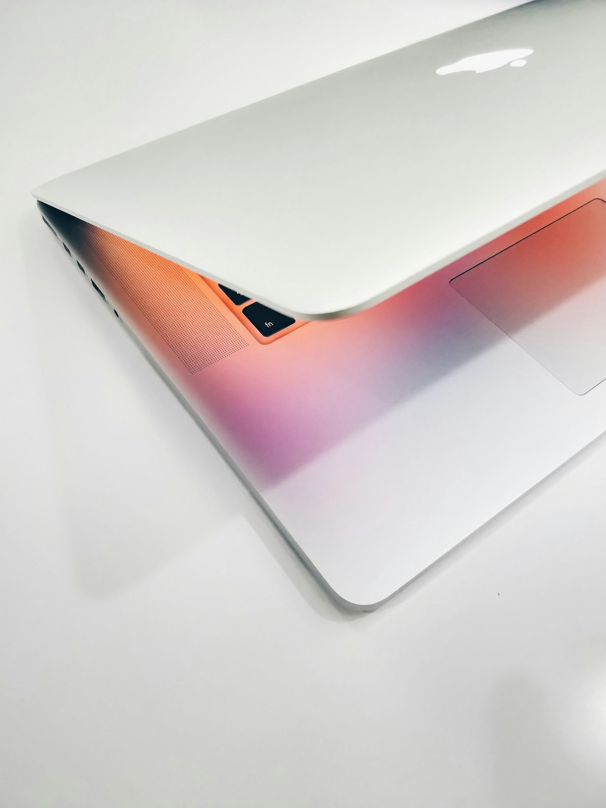
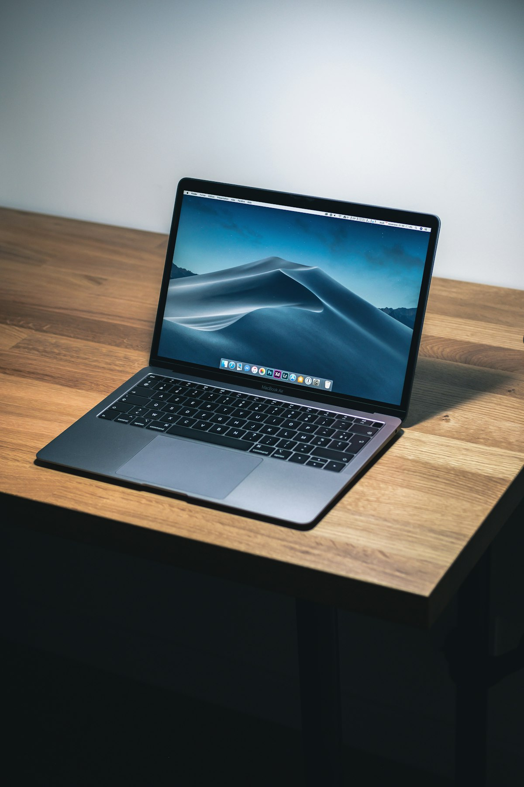
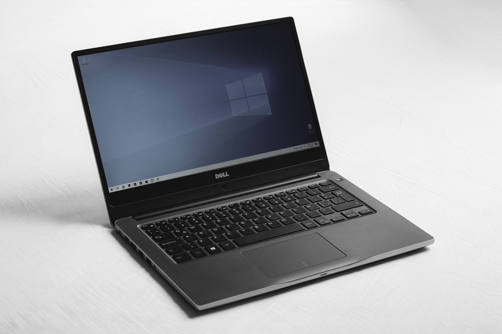

맥북, 처음이라도
괜찮아요
전원 켜는 법부터 트랙패드 제스처, 필수 단축키, 백업까지.
10개의 짧은 레슨으로 맥북과 친해져 보세요. 진행 상황은 자동으로 저장됩니다.
처음 켜기 & 기본 설정
박스에서 막 꺼낸 맥북, 어디를 눌러야 켜질까요? 처음 켰을 때 나오는 화면들을 미리 알아두면 당황하지 않아요.

1전원 켜기
맥북은 뚜껑(화면)을 열기만 해도 자동으로 켜집니다. 만약 켜지지 않는다면 키보드 오른쪽 위 모서리의 Touch ID 버튼(전원 버튼)을 꾹 눌러주세요.
- 지문 인식 센서와 전원 버튼이 하나로 합쳐져 있어요.
- 끌 때는 화면 왼쪽 위 메뉴 → 시스템 종료를 누릅니다.
2초기 설정 마법사
처음 켜면 언어 선택부터 시작하는 설정 화면이 순서대로 나옵니다. 아래 순서만 기억하세요.
- 언어 & 국가 — 한국어, 대한민국 선택
- Wi-Fi 연결 — 집 와이파이 비밀번호 입력
- Apple ID 로그인 — 없으면 "나중에 설정"도 가능해요 (아래 참고)
- 컴퓨터 계정 만들기 — 이름과 비밀번호 설정. 이 비밀번호는 앱 설치 때마다 쓰니 꼭 기억하세요!
- Touch ID 등록 — 지문을 등록하면 비밀번호 대신 손가락으로 잠금 해제
3Apple ID가 뭔가요?
Apple ID는 애플 세계의 회원증입니다. 하나만 있으면:
- 📲 App Store에서 앱을 설치할 수 있어요
- ☁️ iCloud로 사진·파일이 자동 백업돼요
- 💬 아이폰이 있다면 메시지·전화를 맥북에서도 받을 수 있어요
아이폰을 쓰고 있다면 아이폰과 같은 Apple ID로 로그인하는 게 중요해요. 그래야 기기들이 서로 연동됩니다.
4처음 할 일 체크리스트
항목을 눌러 하나씩 완료해 보세요. (자동 저장됩니다)
트랙패드 제스처
맥북의 트랙패드는 단순한 마우스 대용품이 아니에요. 손가락 개수에 따라 완전히 다른 기능이 실행됩니다. 아래 8가지만 익히면 마우스가 필요 없어요.

한 손가락 탭
클릭입니다. '탭하여 클릭'을 켰다면 살짝 터치만 해도 OK.
마우스 왼쪽 클릭두 손가락 탭
마우스 오른쪽 클릭과 같아요. 메뉴가 뿅 하고 나타납니다.
마우스 오른쪽 클릭두 손가락 위아래 쓸기
스크롤입니다. 스마트폰처럼 문서나 웹페이지를 위아래로 움직여요.
스크롤두 손가락 좌우 쓸기
웹브라우저에서 뒤로 가기 / 앞으로 가기가 됩니다.
뒤로/앞으로두 손가락 오므리기/벌리기
사진이나 웹페이지를 확대·축소해요. 스마트폰과 똑같죠?
확대 / 축소세 손가락 위로 쓸기
미션 컨트롤 — 열려 있는 모든 창을 한눈에 펼쳐 보여줘요.
미션 컨트롤세 손가락 좌우 쓸기
전체 화면 앱이나 데스크탑 공간 사이를 이동합니다.
화면 전환엄지+세 손가락 오므리기
런치패드 — 설치된 모든 앱을 스마트폰 홈 화면처럼 보여줘요.
런치패드🎯 오늘의 연습 과제
- 사파리(나침반 아이콘)를 열고 두 손가락으로 스크롤해 보세요.
- 아무 파일에서 두 손가락 탭으로 오른쪽 클릭 메뉴를 열어 보세요.
- 창을 여러 개 연 뒤 세 손가락 위로 쓸기로 전부 펼쳐 보세요.
키보드 & 단축키
맥 키보드의 주인공은 ⌘ 커맨드 키입니다. 윈도우의 Ctrl이 하던 일을 맥에서는 대부분 ⌘가 해요.
🗝️ 특수 키 4형제부터 알아두기
| 기호 | 이름 | 역할 |
|---|---|---|
| ⌘ | 커맨드 (Command) | 단축키의 주인공. 윈도우의 Ctrl 역할 |
| ⌥ | 옵션 (Option) | "다른 방법으로" — 특수문자 입력, 숨은 메뉴 열기 |
| ⌃ | 컨트롤 (Control) | 맥에서는 조연. 화면 전환 등 일부 기능에 사용 |
| ⇧ | 시프트 (Shift) | 대문자, 반대 방향 동작. 윈도우와 같아요 |
📇 필수 단축키 카드 — 눌러서 뒤집어 보세요
⌨️ 단축키 실전 연습
아래 상자를 클릭해 활성화한 뒤, 문제에 맞는 단축키를 실제로 눌러 보세요!
화면 구성 이해하기
맥 화면은 딱 4가지만 알면 됩니다: 메뉴 막대, Dock, Finder, 그리고 Spotlight.

1메뉴 막대 (화면 맨 위)
화면 맨 위의 가느다란 줄이 메뉴 막대입니다. 윈도우와 크게 다른 점이에요.
- 왼쪽 끝 애플 로고: 시스템 종료, 재시동, 시스템 설정이 여기에 있어요.
- 애플 로고 옆에는 지금 사용 중인 앱의 메뉴가 표시돼요. 앱을 바꾸면 메뉴도 바뀝니다.
- 오른쪽 끝: 와이파이, 배터리, 시계, 제어 센터 등 상태 아이콘.
2Dock (화면 맨 아래)
화면 아래 아이콘들이 모여 있는 곳이 Dock(독)입니다. 스마트폰의 홈 화면 즐겨찾기 같은 거예요.
- 아이콘을 클릭하면 앱이 실행됩니다. 실행 중인 앱은 아래에 작은 점이 표시돼요.
- 자주 쓰는 앱을 Dock에 고정: 실행 중인 앱 아이콘을 두 손가락 탭 → 옵션 → "Dock에 유지"
- 오른쪽 끝에는 다운로드 폴더와 휴지통이 있어요.
3Finder (파일 탐색기)
Dock 맨 왼쪽의 웃는 얼굴 아이콘이 Finder입니다. 윈도우의 '파일 탐색기'와 같은 역할이에요.
- 다운로드: 인터넷에서 받은 파일은 전부 여기로 들어와요.
- 문서: 내 문서 파일 보관 장소.
- 데스크탑: 바탕화면에 놓인 파일들.
- 파일을 선택하고 Space를 누르면 미리보기가 열려요. 맥 최고의 기능 중 하나!
4Spotlight (만능 검색)
⌘+Space를 누르면 화면 가운데 검색창이 나타납니다. 이게 Spotlight(스팟라이트)예요.
- 앱 이름을 치면 앱이 바로 실행돼요. 앱을 찾아 헤맬 필요가 없어요.
- 파일 이름, 연락처, 일정도 검색됩니다.
- 계산기로도 써요: "3500*12" 라고 치면 바로 답이 나와요.
- 환율, 단위 변환도 가능: "100달러", "5마일" 등.
창 관리 & 멀티태스킹
창이 여러 개 쌓이면 정신이 없죠. 신호등 버튼 3개와 미션 컨트롤만 알면 창 정리의 달인이 될 수 있어요.
🚦 신호등 버튼 3개의 정체
모든 창의 왼쪽 위에는 빨강·노랑·초록 버튼이 있어요. 각자 하는 일이 다릅니다.
| 버튼 | 이름 | 하는 일 |
|---|---|---|
| 🔴 빨강 | 닫기 | 창만 닫아요. 앱은 계속 실행 중! (완전 종료는 ⌘+Q) |
| 🟡 노랑 | 최소화 | 창을 Dock 오른쪽으로 잠시 접어둬요. 클릭하면 다시 나와요 |
| 🟢 초록 | 전체 화면 | 화면 전체를 이 앱으로 채워요. 나오려면 마우스를 화면 맨 위로 올려 다시 🟢 클릭 |
🪟 미션 컨트롤 — 열린 창을 한눈에
창이 대여섯 개 열려서 "아까 그 창 어디 갔지?" 싶을 때 쓰는 기능이에요.
- 트랙패드에서 세 손가락으로 위로 쓸어올리기 — 모든 창이 쫙 펼쳐집니다.
- 키보드 F3 키(창 3개 그려진 키)를 눌러도 같아요.
- 원하는 창을 클릭하면 그 창으로 이동합니다.
🖥️ 데스크탑 공간(Spaces) 여러 개 쓰기
맥은 가상의 바탕화면을 여러 개 만들 수 있어요. 모니터가 한 대여도 여러 대처럼 쓰는 거죠.
- 미션 컨트롤을 연 뒤(세 손가락 위로 쓸기), 화면 오른쪽 위의 + 버튼을 클릭 → 새 데스크탑 생성
- 세 손가락으로 좌우 쓸기로 데스크탑 사이를 슝슝 이동
- 예: 데스크탑 1은 업무용(문서), 데스크탑 2는 휴식용(유튜브)으로 나눠 쓰기
⚡ 앱 전환 단축키 2가지
- ⌘+Tab — 다른 앱으로 전환. ⌘를 누른 채 Tab을 여러 번 누르면 앱을 고를 수 있어요.
- ⌘+` (Tab 위의 키) — 같은 앱의 창끼리 전환. 사파리 창 2개를 오갈 때 유용해요.
일상 활용
앱 설치부터 스크린샷, 아이폰 연동까지 — 매일 쓰게 될 실전 기능들입니다.
📲 앱 설치하고 삭제하기
설치하는 방법은 2가지예요:
- App Store (파란색 A 아이콘): 스마트폰처럼 검색해서 "받기" 버튼. 가장 안전한 방법이에요.
- 인터넷에서 다운로드: 카카오톡, 크롬 같은 앱은 공식 홈페이지에서
.dmg파일을 받아요. 열리면 앱 아이콘을 '응용 프로그램' 폴더로 드래그하면 설치 끝!
삭제는 더 쉬워요: Finder → 응용 프로그램에서 앱을 휴지통으로 드래그하면 끝. 윈도우 같은 "제어판 → 프로그램 제거" 과정이 없어요.
📸 스크린샷 찍기
| 단축키 | 동작 |
|---|---|
| ⌘+⇧+3 | 화면 전체 캡처 |
| ⌘+⇧+4 | 원하는 영역만 드래그해서 캡처 |
| ⌘+⇧+4 후 Space | 창 하나만 예쁘게 캡처 |
| ⌘+⇧+5 | 화면 녹화 포함 모든 옵션 |
찍은 스크린샷은 바탕화면(데스크탑)에 저장됩니다.
🔗 아이폰과 연동하기
같은 Apple ID로 로그인만 되어 있으면 자동으로 연결돼요:
- AirDrop(에어드롭): 사진·파일을 케이블 없이 주고받기. 아이폰에서 공유 → AirDrop → 내 맥북 선택.
- 메시지: 아이폰으로 온 문자를 맥북에서 읽고 답장.
- 사진: iCloud를 켜면 아이폰으로 찍은 사진이 맥북 사진 앱에 자동으로 나타나요.
- 복사-붙여넣기: 아이폰에서 복사한 글을 맥북에서 바로 ⌘+V!
🔋 배터리 오래 쓰는 습관
- 화면 밝기를 한두 칸 낮추는 것이 가장 효과적이에요.
- 안 쓰는 앱은 ⌘+Q로 완전히 종료하세요.
- 맥북 배터리는 소모품이에요. 시스템 설정 → 배터리에서 상태를 확인할 수 있어요.
- 충전기를 계속 꽂아 둬도 괜찮아요. 맥이 알아서 배터리를 보호합니다.
기본 앱 둘러보기
맥북에는 따로 설치하지 않아도 되는 보물 같은 앱들이 이미 들어 있어요. 이것부터 써보고, 필요한 국민 앱을 추가하면 됩니다.
🧭 Safari — 기본 인터넷 브라우저
Dock의 나침반 아이콘이 Safari(사파리)입니다. 크롬 같은 웹브라우저예요.
- 배터리를 크롬보다 훨씬 적게 써서 맥북과 궁합이 가장 좋아요.
- 새 탭: ⌘+T / 실수로 닫은 탭 되살리기: ⌘+⇧+T
- 아이폰 Safari에서 보던 페이지를 맥북에서 이어서 볼 수 있어요.
👁️ 미리보기 — 숨은 만능 앱
PDF나 이미지를 열면 실행되는 미리보기는 맥에서 가장 저평가된 앱이에요. 유료 프로그램이 하는 일을 공짜로 합니다.
- PDF에 서명하기: 도구 → 주석 달기 → 서명. 트랙패드에 손가락으로 서명을 그려 넣을 수 있어요. 계약서 처리 끝!
- 이미지 크기 줄이기: 도구 → 크기 조절. 이메일 첨부용으로 사진 용량 줄일 때 유용해요.
- 이미지 형식 변환: 파일 → 내보내기 → PNG/JPEG 선택.
📝 메모 & 미리 알림
- 메모: 간단한 글, 체크리스트, 사진까지. 아이폰 메모와 자동으로 동기화돼요.
- 미리 알림: "내일 9시에 알려줘" 같은 할 일 관리. 역시 아이폰과 연동됩니다.
- 캘린더: 일정 관리. 메뉴 막대의 시계를 클릭해도 오늘 일정이 보여요.
📦 한국인 필수 앱 설치 목록
기본 앱으로 부족한 부분은 아래 앱들로 채우면 돼요. 전부 무료입니다.
| 앱 | 용도 | 받는 곳 |
|---|---|---|
| 카카오톡 | 메신저 — 맥북에서 카톡 하기 | App Store |
| Chrome | 인터넷 뱅킹 등 Safari가 안 되는 사이트용 | google.com/chrome |
| 한컴오피스 뷰어 | HWP 한글 문서 열기 | App Store |
| KakaoTalk·Melon 등 | 평소 쓰던 서비스 대부분 맥 버전이 있어요 | App Store 검색 |
윈도우 사용자라면
윈도우를 쓰다 오셨나요? "Ctrl+C가 안 먹혀요!"는 모든 윈도우 이주민의 첫 관문입니다. 차이만 알면 금방 적응해요.

🔄 단축키 번역표
| 하고 싶은 일 | 윈도우 | 맥 |
|---|---|---|
| 복사 / 붙여넣기 | Ctrl + C / V | ⌘ + C / V |
| 저장 | Ctrl + S | ⌘ + S |
| 실행 취소 | Ctrl + Z | ⌘ + Z |
| 프로그램 전환 | Alt + Tab | ⌘ + Tab |
| 파일 삭제 | Delete | ⌘ + Delete |
| 강제 종료 | Ctrl + Alt + Del | ⌘ + ⌥ + Esc |
| 화면 잠금 | Win + L | ⌃ + ⌘ + Q |
| 검색 | Win + S | ⌘ + Space |
🤔 헷갈리는 개념 차이
| 개념 | 윈도우 | 맥 |
|---|---|---|
| 파일 탐색 | 파일 탐색기 | Finder (웃는 얼굴) |
| 작업 표시줄 | 화면 아래 고정 | Dock (비슷하지만 앱 중심) |
| 프로그램 제거 | 제어판에서 제거 | 앱을 휴지통으로 드래그 |
| 창 닫기 버튼 | 오른쪽 위 ✕ | 왼쪽 위 🔴 (앱은 계속 실행됨!) |
| 창 최대화 | 네모 버튼 | 🟢 초록 버튼 = 전체 화면 모드 |
| 설정 | 제어판 / 설정 | 메뉴 → 시스템 설정 |
| 메모장 | 메모장 | 메모 / 텍스트 편집기 |
| 한/영 전환 | 한/영 키 | 한/A 키 (스페이스바 옆) 또는 Caps Lock |
🚨 가장 큰 차이: 빨간 버튼 ✕ ≠ 앱 종료
윈도우에서 ✕를 누르면 프로그램이 꺼지지만, 맥에서 🔴 빨간 버튼은 창만 닫고 앱은 계속 실행됩니다. (Dock 아이콘 아래 점이 남아 있어요)
- 앱을 완전히 끄려면: ⌘+Q 또는 메뉴 막대에서 앱 이름 → 종료
- 이게 나쁜 게 아니에요 — 맥은 메모리 관리를 잘해서, 앱을 켜둔 채 쓰는 게 일반적입니다.
백업·보안·업데이트
사진, 문서, 추억… 맥북이 고장 나거나 잃어버려도 데이터는 지킬 수 있어요. 딱 세 가지만 설정해 두면 됩니다.
⏰ Time Machine — 맥북 통째로 자동 백업
Time Machine(타임머신)은 맥에 내장된 공짜 백업 기능이에요. 외장하드만 있으면 됩니다.
- 외장하드를 맥북에 연결해요. (맥북 저장 용량 이상 크기 권장)
- "Time Machine으로 백업하시겠습니까?" 알림이 뜨면 "백업 디스크로 사용" 클릭. 끝!
- 이후 연결할 때마다 자동으로 백업됩니다. 실수로 지운 파일도 과거 시점으로 돌아가 복구할 수 있어요.
☁️ iCloud — 사진과 문서 자동 동기화
- Apple ID로 로그인하면 5GB 무료 클라우드 공간이 생겨요.
- 사진 동기화: 시스템 설정 → Apple ID → iCloud → 사진 켜기. 아이폰 사진이 맥북에 자동으로 나타나요.
- 사진이 많다면 월 1,100원(50GB)부터 용량을 늘릴 수 있어요. 백업치고 저렴한 보험입니다.
🔄 소프트웨어 업데이트 — 최고의 보안
맥 보안의 90%는 최신 업데이트 유지입니다.
- 메뉴 → 시스템 설정 → 일반 → 소프트웨어 업데이트
- "자동 업데이트"를 켜두면 자는 사이에 알아서 설치돼요.
- 업데이트 알림이 떠도 무서워하지 마세요 — 보안 구멍을 막아주는 고마운 알림이에요.
🛡️ 맥북에 백신이 필요한가요?
결론부터: 대부분 필요 없어요. 맥에는 이미 3중 보안이 내장돼 있어요.
- Gatekeeper: 확인 안 된 앱의 실행을 막아줘요.
- XProtect: 애플이 관리하는 백신이 뒤에서 조용히 돌아가요.
- 가장 중요한 건 사용자 습관: 출처 불명 설치 파일 안 받기, 수상한 링크 안 누르기.
📍 나의 찾기 — 잃어버렸을 때 마지막 희망
카페에 두고 왔을 때 나의 찾기(Find My)가 켜져 있으면 아이폰이나 icloud.com에서 맥북 위치를 확인하고, 원격으로 잠글 수도 있어요.
자주 묻는 문제 해결
초보자들이 가장 많이 겪는 상황들입니다. 이것만 알면 웬만한 문제는 스스로 해결할 수 있어요.
😵 "앱이 멈춰서 아무것도 안 돼요"
⌘+⌥+Esc를 누르면 강제 종료 창이 열립니다. 멈춘 앱을 선택하고 "강제 종료"를 누르세요. 윈도우의 Ctrl+Alt+Del과 같은 역할이에요.
🔤 "한글이 안 쳐져요 / 영어만 나와요"
스페이스바 오른쪽의 한/A 키를 한 번 누르세요. 메뉴 막대 오른쪽 위에 "한" 또는 "A" 표시로 현재 입력 언어를 확인할 수 있어요.
🪟 "창이 사라졌어요"
창이 Dock으로 최소화(노란 버튼 🟡)됐을 가능성이 커요. Dock 오른쪽을 보면 작아진 창이 있어요. 클릭하면 돌아옵니다. 또는 ⌘+Tab으로 해당 앱으로 전환해 보세요.
💾 "USB 메모리는 어떻게 빼요?"
바탕화면이나 Finder 사이드바에서 USB 이름 옆의 ⏏ 추출 버튼을 누른 뒤 빼세요. 그냥 뽑으면 "디스크가 제대로 추출되지 않았습니다" 경고가 뜨고, 드물게 파일이 손상될 수 있어요.
🐢 "맥북이 느려진 것 같아요"
- 브라우저 탭을 너무 많이 열어두지 않았는지 확인 (탭 하나하나가 메모리를 써요)
- 재시동을 해보세요: 메뉴 → 재시동. 몇 주 만의 재시동만으로 좋아지는 경우가 많아요.
- 저장 공간 확인: 메뉴 → 이 Mac에 관하여 → 저장 공간. 90% 이상 찼다면 정리가 필요해요.
🔇 "소리가 안 나요"
- 키보드 윗줄 F12(스피커 아이콘)로 볼륨을 올려보세요.
- 메뉴 막대의 제어 센터에서 출력 기기가 블루투스 이어폰으로 잡혀 있지 않은지 확인하세요.
🆘 그래도 안 되면
- 재시동이 만능 해결사입니다. 문제의 80%는 재시동으로 해결돼요.
- 애플 공식 지원: support.apple.com/ko-kr 또는 Apple 지원 앱
- 가까운 Apple Store나 공인 서비스 센터에서 무료 상담(지니어스 바)을 받을 수 있어요.
맥린이 졸업 시험 🎓
10문제로 배운 내용을 확인해 보세요. 부담 없이 — 틀려도 해설을 보며 다시 배우면 됩니다.